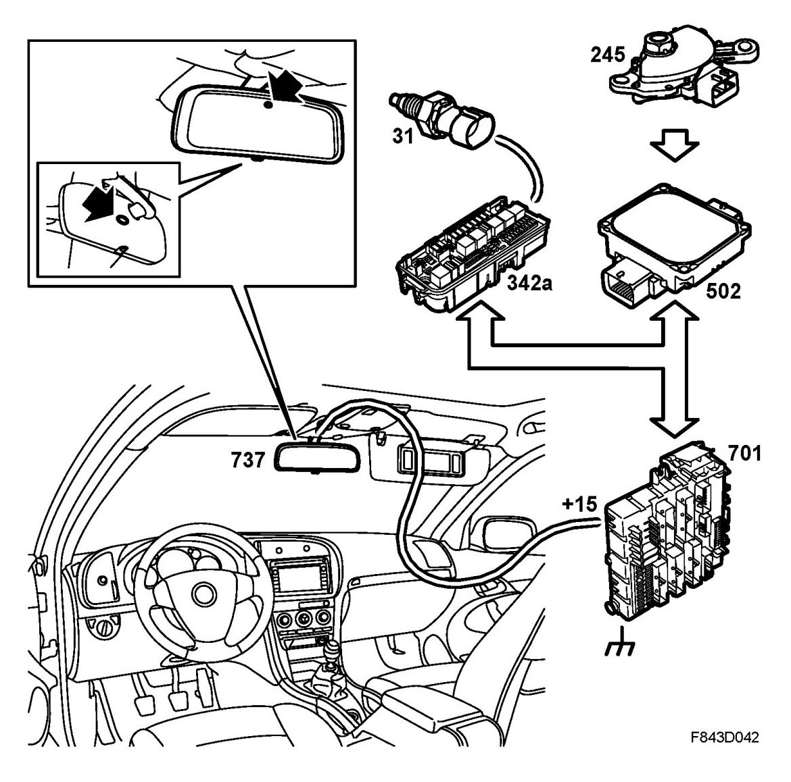

Autodimming Interior Rearview Mirror, Brief Description
Autodimming Interior Rearview Mirror, Brief Description
Overview

- Switch, reversing lights (31)
- Underhood electrical centre (342)
- Control module, TCM (502)
- Control module, ADM (637)
- Rear electrical centre (701)
The autodimming interior rearview mirror automatically darkens when the lights of a vehicle behind shine on the mirror. The rearview mirror comprises of two sheets of glass with a film in-between, and a reflective layer on the inner glass. The long sides of the mirror glass each have a contact strip. Depending on the signals from the sensors, a voltage can be applied across the mirror causing the film to darken. This control is stepless.